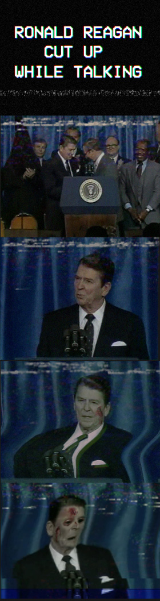

Still frames from SCP-1981. Note the presence of SCP-1981-1
Item #: SCP-1981
Object Class: Safe
Special Containment Procedures: SCP-1981 is to be kept inside a secure video storage unit at the media archive of Site ██. When in use, SCP-1981 should not be removed from its casing or exposed to any strong magnetic sources. A Betamax home video system and an analog television has been provided in Observation Theatre 02 at Site ██, as well as video equipment to record viewings.
Description: SCP-1981 is a standard Betamax tape. "RONALD REGAN CUT UP WHILE TALKING"(sic) has been handwritten on the adhesive sticker in felt tip pen. Laboratory analysis indicates that SCP-1981 is made of ordinary material, and serial numbers correspond with home cassette tapes produced in September of 1980. SCP-1981 was initially encountered by a filing clerk in the Ronald Reagan Presidential Library in 1991, who upon watching it alerted the police, with the intent to find the tape's creator to press "obscenity charges". A low-level police investigation was conducted, at which point the Foundation was alerted and secured SCP-1981. Class A amnestics were administered before █████ could be notified. Further investigation of the library's records by Foundation personnel failed to yield any leads on SCP-1981's origin.
SCP-1981 appears to be a home video recording of former United States President Ronald Reagan delivering his "Evil Empire" speech to the National Association of Evangelicals at Sheraton Twin Towers Hotel, Orlando, FL on 3/8/1983. However, at 1 minute and 10 seconds, the speech begins to deviate heavily, eventually resembling no known speech ever made by Reagan. Beginning at approximately 5 minutes, multiple incisions, lacerations and penetration wounds can be seen being slowly inflicted, though no corresponding source of these wounds is visible. Despite suffering bodily harm that would likely incapacitate an ordinary person, Reagan will continue to deliver his speech until either his vocal cords are severed or the tape degrades to static at 22:34.
Upon rewinding SCP-1981 and initiating playback, Reagan will deliver an entirely new speech, often radically different from the ones previously observed. Topics have included torture, child molestation and ritual sacrifice. Trauma inflicted upon Reagan also appears to be divergent, with impalement, genital mutilation, and [REDACTED] having all been observed. In roughly one in seven viewings of SCP-1981, a figure clothed in black robes with a conical hood will have replaced a random member of Reagan's press detail, henceforth referred to as SCP-1981-1. The significance of the appearance of SCP-1981-1 is currently unknown.
The speeches delivered by Reagan are mostly incoherent, lacking any sort of underlying thematic structure and largely being composed of nonsensical anecdotes and parables. However, occasionally references are made to future events that Reagan could not possibly have known about or predicted, such as the September 11 terrorist attacks, the result of the 2008 Russian elections, and █████ ██████████. For this reason, rigorous time and effort has been devoted to recording the speech delivered on each playback. Attempts to replicate SCP-1981 onto a similar Betamax tape have met with failure, however, cameras used to record the television SCP-1981 is broadcasted on have succeeded in "capturing" individual playbacks. Any observations performed on SCP-1981 must be recorded on the camcorder provided, and delivered for subsequent review to Dr. B█████, project supervisor.
Years of natural magnetic interference have severely degraded SCP-1981's signal quality, making it even more difficult to sift meaningful information from playbacks. Additionally, the gruesome nature of the mutilations performed upon Reagan has been described as "extremely disturbing", and for this reason it is recommended that any personnel feeling squeamish or ill after playback visit the on-site psychiatry facility for a level 3 evaluation.
As Ronald Reagan was alive at the time of SCP-1981's containment, a surveillance net was deployed to establish any relation between him and SCP-1981. No known connection was developed, though Reagan would frequently complain about "nightmares" before his mental state degenerated due to Alzheimer's.